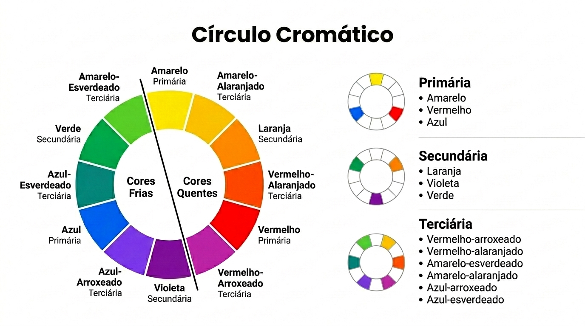
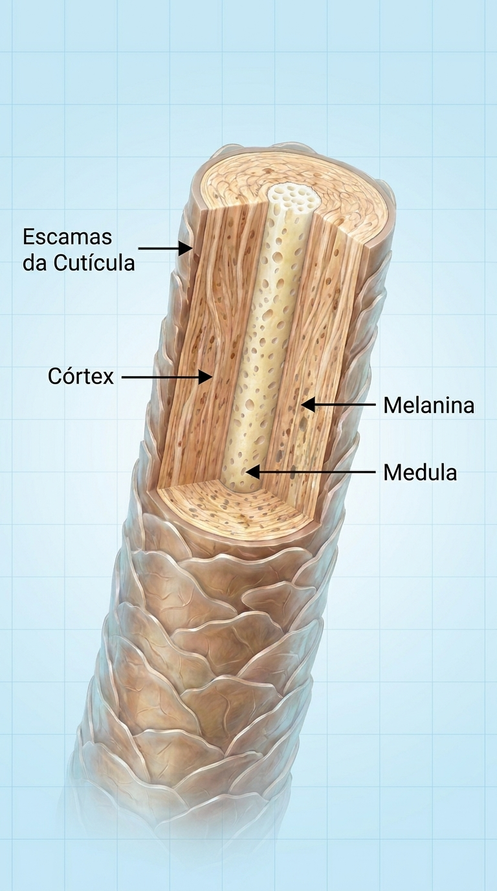
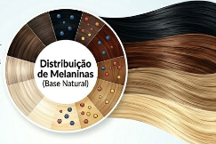
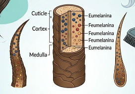

Guia Técnico e Prático
Dão origem a TODAS as outras cores.
Já existem no cabelo (melanina e fundo de clareamento).
Amarelo + Azul = VERDE (Reflexo mate)
Amarelo + Vermelho = LARANJA (Fundo castanho)
Azul + Vermelho = VIOLETA


A "porta". Protege e dá brilho. (Não tem melanina).
O "coração". Onde ficam as melaninas e onde a cor fixa.
O núcleo central. (Ação química mínima).
Definindo a cor natural do fio.
Melaninas são os pigmentos naturais que dão cor ao cabelo. São produzidas pelos melanócitos.
A mistura dessas três cria todos os tons naturais.

Eles formam o fundo de clareamento e influenciam toda cor que você aplica.

Quanto mais escuro o cabelo → maior concentração de pigmentos.
A criação de cores na indústria de beleza.
São pigmentos criados pela indústria e usados nas colorações. No tubo ainda não são pigmentos → são corantes oxidativos.
São moléculas pequenas e sem cor até serem ativadas e reveladas pelo oxidante. Função: formar a cor artificial dentro do córtex após oxidação.
Corantes Oxidativos. Penetra e fixa no córtex.
Ação na cutícula e superfície do fio.
Pigmentos de superfície (Nitroanilina). Sai na água.
Dentro da fórmula das colorações e tonalizantes existem 5 tipos:
Destaque: Base Natural (Ex: 5) vs Base Cosmética (Ex: 5.0)
Entenda o Sistema de Reflexos e Nuances (Após a Barra, Vírgula ou Ponto)
| Reflexo (.0-.9) | Nomenclatura Padrão | Descrição / Ação | Visual |
|---|---|---|---|
| .0 | Natural | Sem Reflexo Adicional | |
| .1 | Cinza | Neutralizar tons quentes | |
| .2 | Violeta | Neutralizar tons amarelos | |
| .3 | Dourado | Adicionar calor e brilho | |
| .4 | Cobre | Cor vibrante e quente | |
| .5 | Acaju | Tons de mogno e vermelho frio | |
| .6 | Vermelho | Vermelho intenso e quente | |
| .7 | Marrom | Equilibrar tons frios/quentes | |
| .8 | Azul | Neutralizar tons alaranjados | |
| .9 | Mate | Neutralizar tons de vermelho puro | |
| .89 | Cendré | Neutralizar tons muito alaranjados |
O Mesmo Reflexo, Nomes Diferentes no Mercado
(Tonalidade Base + Reflexo Dourado)
7.3
Louro Claro Dourado Reluzente
7/G
Louro Claro 'Ouro'
O segredo que diferencia uma marca da outra.
É o diferencial de cor da base de cada empresa. Não é reflexo, não é correção, não é o número depois do ponto. É a "massa" da coloração, aquilo que sustenta o tom.
O fundo de pigmento está na base, no pigmento que chega mais fundo no fio. É ele que encontra o fundo de clareamento primeiro. Por isso influencia TANTO o resultado.
Porque o fundo de pigmento intensifica, suaviza ou neutraliza o fundo de clareamento automaticamente, sem você pedir. É a "personalidade" da marca.
Exemplo na Base 7.0:
Neutraliza amarelos e laranjas intensos. Serve para intensificar bastante os tons frios.
Exemplo na Base 7.0:
Neutraliza muito bem os vermelhos e laranjas avermelhados. Suaviza tons quentes criando bases mais naturais.
Exemplo na Base 7.0:
Foco em neutralizar totalmente o amarelo e acobreado. Equilibra e neutraliza tons de base perfeitamente.
Mecanismo de Acoplamento e Tempo de Fixação
Com Base Forte (Estável): Pigmento se fixa de forma estruturada. Cor duradoura.
Com Base Fraca (Instável): Acoplamento frágil. Cor desbota rapidamente.
Corantes oxidativos mergem no interior do fio. É a combinação de diferentes moléculas pequenas que penetram e, ao reagirem, se unem formando um pigmento final enorme e estável dentro do córtex.
Moléculas precursoras se unem formando uma macromolécula aprisionada no fio.
Um Guia Completo sobre Profundidade e Fixação
| Tipo de Pigmento | Profundidade | Fixação | Comparativo Visual | Função Principal |
|---|---|---|---|---|
| 1. Nitroanilina | Superficial | Temporária | "Glitter" | Brilho, cor imediata |
| 2. Revelado | Entre cutículas | Média | "Esmalte cintilante" | Cor vibrante, brilho |
| 3. Expandido | Parcial | Boa | "Esmalte fosco" | Aderência maior |
| 4. Refletivo | Endocutícula | Alta | "Pigmento metálico" | Reflexos duradouros |
| 5. Plano (Base) | Córtex profundo | Máxima | "Pigmento de base" | Cobertura e profundidade |
"Quem entende pigmento não depende da sorte — cria resultados previsíveis e duradouros."
É o pigmento natural revelado quando o cabelo clareia. Não é reflexo ou nuance; é a base sobre a qual a cor final é construída.
Sempre que houver descoloração ou clareamento com cor permanente. Presente em todos os níveis de cabelo, do 1 ao 10.
Determina a base para a cor final; influencia a neutralização, fixação e intensidade do reflexo.
Interpretando o tom residual exposto após a oxidação, não a cor original. Requer conhecimento profundo da Estrela de Oswald.
Dominar o Fundo Residual é dominar a Cor e criar tons perfeitos.
| Nível | Altura de Tom | Fundo Residual (Cor) | Exemplo Visual |
|---|---|---|---|
| 1 | Castanho Escuríssimo | Vermelho | |
| 2 | Castanho Escuro | Vermelho | |
| 3 | Castanho Médio | Vermelho | |
| 4 | Castanho Claro | Vermelho Alaranjado | |
| 5 | Louro Escuro | Alaranjado | |
| 6 | Louro Médio | Alaranjado Amarelo | |
| 7 | Louro Claro | Amarelo | |
| 8 | Louro Muito Claro | Amarelo Claro | |
| 9 | Louro Claríssimo | Amarelo Muito Claro | |
| 10 | Ultra Louro | Branco (mínimo) |
Retira pigmento NATURAL (Melanina). Usa pó descolorante (persulfatos).
Retira pigmento ARTIFICIAL (Coloração prévia).
Juntar as 3 cores primárias para ir para o NATURAL.
Exemplo Prático:
Fundo de clareamento 5 ( Vermelho)
→ Aplicar VERDE ( Azul + Amarelo) na cumbuca.
Modifica a nuance sem alterar a altura do tom.
Pigmentos puros para corrigir, direcionar ou criar cores. Para 30g de massa:
Para escurecer um cabelo perfeitamente, precisamos devolver os pigmentos corretos. Dominar as 3 técnicas a seguir separa o amador do colorista profissional.
QUANDO USAR: Somente em cabelos 9 ou 10!
COMO FUNCIONA: Aplica uma cor 1 tom MAIS ESCURA + 1 reflexo A MAIS.
RESULTADO: Desbota 1 tom e desbota 1 reflexo, chegando exatamente no tom desejado.
QUANDO USAR: Para criar tons naturais com profundidade perfeita.
ATENÇÃO: O "Cobre" só entra na sequência quando o cabelo estiver no fundo 9 ou 10!
Do 9 para o 6.0:
Misturar 6.3 + 6.1 + 6.0 + 6.4
(Cobre entra porque o 9 não tem base vermelha)
Do 8 para o 6.0:
Misturar 6.3 + 6.1 + 6.0
(Sem cobre, pois o fundo 8 já possui laranja/vermelho)
NUNCA coloque cobre na cumbuca para criar tom natural do 8 para baixo (vai virar marrom quente).
NUNCA use a Tabela de Escurecimento do 8 para baixo.
Use SEMPRE oxidante de 10 volumes para escurecer.
| Nível | Medida de Pigmento | Medida Visual (cm) |
|---|---|---|
| 10 | 0,25 mg | 0,5 cm |
| 9 | 0,25 mg | 0,5 cm |
| 8 | 0,50 mg | 1 cm |
| 7 | 0,75 mg | 1,5 cm |
| 6 | 1 g | 2 cm |
| 5 | 1,25 g | 2,5 cm |
| 4 | 1,50 g | 3 cm |
| 3 | 1,75 g | 3,5 cm |
Newimpact: "Compreender as medidas precisas é fundamental para a consistência e a perfeição técnica."
QUANDO USAR: Cliente quer tom FRIO, mas o cabelo dela revela fundo QUENTE (laranja/cobre).
REGRA DE OURO: Neutralize o que você está VENDO no fundo, não apenas o número que ela deseja!
O Caso: Cabelo 7 Laranja. Cliente quer 5.1 (Cinza Frio).
ERRO: Aplicar só o 5.1. O cinza não cobre o laranja do 7. Vai virar marrom quente!
SOLUÇÃO: Colocar corretor Azul para "matar" o laranja revelado.
O melanócito para de produzir melanina. Sendo um fio sem cor, ele se torna mais rígido e com mais camadas de cutículas.
Fator principal. Entre 30 e 40 anos, a produção reduz naturalmente.
Estresse, poluição, cigarro e sol matam os melanócitos rápido.
Falta de vitamina B12 prejudica as células do folículo.
Vitiligo, alopecia, alterações de T3/T4 paralisam a melanina.
1. Preparar o fio: Use anti-resíduos para abrir a cutícula rígida.
2. Mistura de Ouro: SEMPRE use 50% BASE + 50% REFLEXO.
3. Carga Generosa: Deposite o produto. Não fique apenas "pincelando".
O branco não tem fundo, mas o cabelo natural do lado TEM!